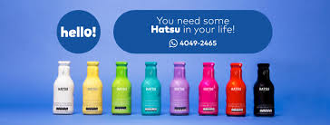

Análisis de precios
Maestría en Mercadeo
Semana 2
- Como vamos?
- Preguntas de la clase anterior? üò¨
- Recordeis de lo visto. Qué fué lo que lo/a impresionó
- Pendientes
Dentro de la analitica para compradores
- Decidir qué queremos hacer y cómo juzgar los resultados
- Recopilar, organizar, limpiar y verificar los datos pertinentes
- Analizar los datos
- Comunicar análisis y recomendaciones
- Tomar decisiones
- Aplicar las decisiones basadas en datos
- Evaluar y mejorar retrospectivamente
- Repetir… una vez se tenga un proceso estable, que automatice con cuidado y supervise
Retos de los directivos ejécutivos
- Pueden ser territoriales o estar incentivados a serlo
- Pueden temer que la analítica los limite o sustituya
- Pueden pensar que los datos son mágicos
- Pueden preferir las corazonadas o malinterpretar la incertidumbre
Hablemos de riesgo ⚠️
Riesgo
Definición de riesgo
Todos los individuos toman decisiones cada día. Sin embargo, no siempre es claro para nadie que resultados pueden derivarse de esas decisiones. Cuando eso ocurre, podemos decir que estamos tomando decisiones en situaciones bajo riesgo o incertidumbre
- Riesgo: Los individuos desconocen los diferentes resultados, pero pueden asignarles probabilidad de ocurrencia
- Incertidumbre: Los individuos no pueden asignar probabilidad a cada resultado que le pudiera ocurrir aún si pudieran escoger. La naturaleza todo el tiempo le brinda a los individuos estado o estatus de incertidumbre.
Vamos por partes…
Vamos por partes…
Warning
La presencia de la incertidumbre supone que las consecuencias que se derivan de cada alternativa disponible no se conocen con antelación, sino por el contrario, dependen de la ocurrencia de sucesos aleatorios fuera del control de los consumidores y/o agentes económicos.
- Cuando elige su carrera profesional.
- Cuando va a comprar una vivienda.
- Si compra un seguro (vida, vehículo, etc.).
- Cuando elige un presidente.
Ejemplo de elección
Suponga que a usted le han propuesto jugar las siguientes loterías, solo debe escoger una de ellas. Cuál prefiere jugar o cuál elegiría:
- Si se lanza una moneda al aire y sale cara gana
$100.000y si sale sello usted pierde$50.000. - Si se lanza una moneda al aire y sale cara gana
$200.000y si sale sello usted pierde$100.000. - Si se lanza una moneda al aire y sale cara gana
$20.000.000y si sale sello usted pierde$10.000.000.
Cuál elige?
Ejemplo de elección
Miremos las opciones con el Valor Esperado
Para la lotería 1: \[\mathbb{E}[x]=100.000\times0.50+\color{#d62013}{-50.000}\times 0.50= 25.000\]
Para lotería 2: \[\mathbb{E}[x]=200.000\times0.50+\color{#d62013}{-100.000}\times 0.50= 50.000\]
Finalmente, la lotería 3: \[\mathbb{E}[x]=20.000.000\times0.50+\color{#d62013}{-10.000.000}\times 0.50= 5.000.000\]
Ejemplo de elección
Las loterías ayudan a mirar lo que finalmente puede desear una persona. Tome a consideración la siguiente oferta:
A. Una lotería que le ofrece $120.000 con probabilidad de 50% o nada con igual probabilidad.
B. Ganarse con certeza $50.000
Cuál elige?
La lotería que mayor Valor esperado tiene es la elegida.
Ejemplo con valor esperado
Para la primera lotería (A): \[\mathbb{E}[x]=0\times 0.50+\color{#44C1C4}{120000}\times 0.50= 60.000\]
Para la segunda \[\mathbb{E}[x]=\color{#44C1C4}{50.000}\times 1= 50.000\]
Hay que ver que tipo de riesgo toma una persona para mirar que loteria acepta. Para este parte vamos hacer otras adiciones.
Utilidad esperada
Cada resultado posible puede cuantificarse en términos de útiles, y representarse a través de la función de utilidad de un consumidor. Ej: La función de utilidad de un individuo es \(F(X)=\sqrt{x}\), halle la utilidad esperada.
\[U\mathbb{E}[x]=\sqrt{0}\times 0.50+\sqrt{\color{#44C1C4}{120000}}\times 0.50= 173,20\]
\[U\mathbb{E}[x]=\sqrt{50.000}= 223,60\]
Utilidad Esperada
Si la Utilidad esperada de una lotería es mayor a la otra de acuerdo al tipo se elegirá esa.
| Tipo | Función f(x) |
|---|---|
| No riesgos | \(\sqrt{x}\) |
| Neutrales | \(ax+b\) |
| Gusto al riesgo | \(e^x\) |
Estas funciones de utilidad son construidos por Matemáticos que han encontrado esto de forma estructural.
Utilidad Esperada
Utilidad esperada
Hagamos otro ejemplo. Suponga que Mateo tiene una riqueza inicial de 10 millones y él se considera averso al riesgo y le ofrecen lo siguiente:
\[U\mathbb{E}[x_a]=\sqrt{10.100.000}\times0.50+\sqrt{9.950.000}\times 0.50= 3166,20\]
\[U\mathbb{E}[x_b]=\sqrt{10.200.000}\times0.50+\sqrt{9.800.000}\times 0.50= 3170,08\]
\[U\mathbb{E}[x_c]=\sqrt{30.000.000}\times0.50+\sqrt{0}\times 0.50= 1596,18\]
Note que por ser averso al riesgo no va a tomar la tercera lotería que le ofrece un mayor premio.
Utilidad del valor esperado
La utilidad expresada en la esperanza de los valores de los individuos dada la forma de su función de utilidad.
Nuevamente, tomemos la información de la lotería de la moneda y hallemos de acuerdo a los valores esperados su Utilidad del Valor Esperado
\[U (V.E_a)= \sqrt{25.000}= 158,11\; \textrm{útiles}\]
\[U (V.E_b)= \sqrt{50.000}= 223,60\; \textrm{útiles}\]
\[U (V.E_c)= \sqrt{5.000.000}= 2236,06\; \textrm{útiles}\]
Utilidad del valor esperado
Si la Utilidad del Valor Esperado \(U(V.E)\) es > \(U(\mathbb{E})\) y el individuo la elige, es porque en realidad es averso al riesgo
| Tipo | Función f(x) |
|---|---|
| Aversión | \(U(V.E)>U.E\) |
| Indiferente | \(U(V.E)=U.E\) |
| Gusto al riesgo | \(U(V.E)<U.E\) |
Depende mucho de los perfiles de los individuos.
Diagramas
Recuerde que puede diagramar de tal manera que
flowchart LR
A[Situación] --> B(Hacer Publicidad) & C(No hacer nada)
B --> D{Tenemos un negocio}
D -->|Probabilidad 30%| E[Ganamos 100 millones]
D -->|Probabilidad 70%| F[Perdemos 400 millones]
Diagramas
Resuelva esta situación
Hagalo usted mismo/a ü§†
Discuta con los compañero/as cuando ha enfrentado opciones de loteria
Plantee un diagrama o arbol de decisión de una situación
Mencione que ventajas para el marketing trae conocer del riesgo
Segunda sesión
Sesion Sabado
- Mirar el trabajo solicitado
- Aprender sobre compras
- Discutir un par de temas adicionales
Retos de los Analistas de Mercado
- Costosos
- Difícil(es) de encontrar
- No siempre están actualizados
- No siempre están interesados en el negocio
- Inexperiencia
- Riesgo Moral
Retos del analista
- ¿La analítica toma o justifica las decisiones?
- ¿Entorno de alta o baja confianza? ¿Tolerancia a la incertidumbre?
- ¿Se recompensa o se dispara a los mensajeros?
- ¿Los datos están disponibles e integrados?
- ¿Los equipos trabajan juntos o compiten?
Ejemplos de la buena organización en analitica
Algunos Principios
- El equipo central regula los datos, los archivos, las normas y las herramientas.
- La división de analistas no centrales colaboran con los ejecutivos.
- Las trayectorias profesionales analíticas están bien establecidas
- Las decisiones deben ser cuidadosas sobretodo con el alojamiento y la externalización de los datos que se usan.
Ejemplos de la buena organización en analitica
Evaluando una data comercial
- Utilidad: ¿Qué impacto tiene poseerla?
- Frecuencia: Compras > Inventarios
- Fiabilidad: ¿Se puede verificar?
- Privacidad: ¿Es legal? ¿Se opondrán los clientes?
- ¿Será su uso noticia?
- Tamaño: ¿Muestra o población?
- Costo: ¿Es proporcional al mantenimiento? ¿Se puede actualizar?
Pruebas que podemos realizar
- Testeo de medias
- Análisis de cestas
- Modelo de competencia
- Analisis conjunto
- Publicidad cooperativa
- Segmentación de compradores
- Dashboard (BI, Tableu)
- Modelo de Demanda
- Marketing Directo
- Investigación de mercado
- Visualización de mercado
- Optimización Precio/promoción
- Remarketing
- Tendencias
- Targeting
- Personalización
- Retención de consumidor
Hablemos de Segmentación
Segmento
Una forma elegante de decir que los consumidores difieren, por ejemplo de:
- Necesidades del producto: intensidad de uso, frecuencia, contexto; fidelidad.
- Demografía
- Psicográficos: orientación al arte, estatus, religión, familia, etc.
- Ubicación, Experiencia, Información, Actitudes
Las diferencias suelen predecir las compras, el consumo, el uso, la satisfacción, la retención, etc.
Segmento de bebidas


Segmentación de mercado
Segmentos: grupos de clientes distintos con atributos similares dentro de un segmento, atributos distintos entre segmentos
- Fundamental desde los años 60’s
- Existen numerosas técnicas de segmentación; hay importantes mejoras recientes
- Los perfiles de respuesta del cliente incorporan segmentos
- Segmentos B2B: necesidades del cliente, tamaño, rentabilidad, estructura interna
Factores de decisión: atributos del producto, extensiones, agrupación, envasado; orientación de la publicidad, contenido, medios de comunicación; discriminación de precios, descuentos; redes sociales, programas de fidelización
Los segmentos deben ser relevantes para los objetivos de la empresa, identificables y sustanciales.
Ejemplo
Es la segmentación por género sexista?
Observe esto
- Acceso en The pink Tax Moshary et al., (2018).
Segmentación (?)

Segmentación en acción
- Como se hace? Quien lo hace?
- Usuarios de navegadores
- Por qué se hace oculto
Quien lo hace?
Una gran empresa por lo general segmenta mercado
Quien lo hace?
Siempre hay por donde tener clientes
Hagalo usted mismo/a
- Ingrese al sitio web de:link firefox
- Discuta primero con quien se identifica
- ¿Qué hay de importante?
Segmentación en tecnica
Las empresas no hacen públicos los segmentos
- Ejemplo 1: “Abastecemos nuestras tiendas con lo que nos gusta, aprovechando nuestro interés -y el de nuestros clientes- por el arte contemporáneo, la música y la moda..
- Ejemplo 2: Ofrecemos una experiencia de compra específica para el estilo de vida de una persona educada y de mentalidad urbana de entre los 18 y 30 años de edad…”
- Ejemplo 3: Nuestro cliente está muy implicado en el comportamiento de apareamiento y citas… uno de los principales motores de su comportamiento de gasto… se esfuerza por posponer la edad adulta… ’’
Un ejemplo en investigación
Caso de promoción
Para cualquier descuento de precio < margen de contribución, dar un cupón a…
Nuestro cliente fiel a la marca reduce directamente el beneficio
Un cliente marginal puede aumentar el beneficio
Un cliente fiel a otra marca no modifica el beneficio.
Por tanto, el reto del modelo de demanda es identificar correctamente a los clientes marginales sin identificar accidentalmente al cliente fiel a nuestra marca.
Conjuntos de información
Datos demográficos básicos:
- Ingresos, Tamaño de la familia, Jubilado, Desempleado, Madre soltera.
Datos demográficos adicionales:
-Edad, Secundaria, Universidad, Cuello blanco, N° Hijos, Casado, N° Perros, N° Gatos, Inquilino, N° TVs
Historial de compras:
- Cuotas de compra de marcas, recuentos de compras de marcas, cuota de descuentos, cuota de características, cuota de expositores, N° marcas compradas, gasto total
Modelo de demanda
Función de demanda
\[Q(X)=Gustos,\;Ingreso,\;Precios,\;Edad,\cdots\]
Modelo
\[\color{#9370DB}{Demanda_i} = \beta_0 + \beta_1~\color{#FF0000 }{Precios_i} + \varepsilon_i\]
De los modelos
Para predecir el comportamiento, utilice el comportamiento pasado
La teoría económica puede ayudar a que los modelos de demanda funcionen bien con datos de comportamiento limitados
El rendimiento del Machine Learning depende críticamente de la calidad del predictor
Rendimiento estadístico ≠ rendimiento económico
Construiremos modelos logit con datos de compra en las siguientes semanas
Preguntas
Mencione algunos atributos que debe tener una buena segmentación de mercado?
Supongamos que segmentamos el mercado de smartphones en función de la marca deseada por cada cliente. ¿Es éste un buen enfoque?
Respuesta
¿Cómo elegir los atributos?, Queremos segmentar en función de atributos que impulsen las ventas, los beneficios y la retención. ¿Pero cómo?
- Teoría
- Estudio de mercado
- Base de datos de clientes
- Consultar a expertos en clientes (vendedores)
- Averiguar qué hacen otras empresas
- Dejar que los datos de ventas elijan por nosotros
Otra forma de segmentar
En esta parte se hará explicación de uno de los primeros algoritmos de clasificación denominado vecino cercano. Información adicional de referencia teórica puede encontrar en Samet (2007).
Este algoritmo, es denominado algoritmo perezoso pero eso no es tan malo del todo, ni es el peor de la familia de algoritmos de clasificación, por el contrario, es de fácil implementación y tiene unas consideraciones, que cualquiera puede optar por usar.
K-means
Para clasificar, siempre se tienen premisas, entre esas:
- Cosas que suelen ser parecidas tienen cosas en la cual pueden ser similares.
Blanco es, gallina lo pone y frito se come
- Tiene varias ventajas
- Simple y es altamente efectivo
- No requiere de distribución alguna
- Su entrenamiento en fase es sencillo
K-means
- También tiene desventajas
- No produce un modelo (no hay relación entre variables)
- Requiere de una selección optima de K
- Tiene fase lenta de clasificación
- Si tiene nominales y missing values se requieren procesos adicionales
Lo que hace
La idea parte en casos que no son “clasificados”, lo sean a partir de su vecino mas cercano. Se hace a partir de la Fase de entrenamiento, que debe poseer elementos ya clasificados previamente. Aquellos casos que sean mas difíciles de clasificar se van a ir a la categoría con mas vecinos.
Un ejemplo simple
Suponga que se toma a un individuo \(i \in \{1,2,3,\dots, n \}\) y se le hace una propuesta que de pruebe un alimento novedoso y se le pide que lo clasifique. Antes de eso ya se tiene una base que tiene una previa clasificación y que lo tiene como: Crujiente (1 a 10) <-> Dulce (1 a 10) La definición será tomarlo como: fruta, vegetal o proteína.
Del Ejemplo
Según Gallego(2017), podría uno establecer un tipo de gráfico de la forma:
De lo anterior, ¿existe algún patrón?. Si le dijera que tenemos un tomate, como lo clasificaría? Fruta o vegetal?
La idea
Para tener vecinos, hay que tener un indicador o medida para eso. Uno recursivo puede ser la distancia euclídeana.
\[dist (p,q) = \sqrt{ \sum_{i=1}^{m}(p_{i}-q_{i})^{2}}\] Donde \(p\) y \(q\) son vectores de m-dimensiones. Para ser un poco mas claros, intentemos lo del tomate.
Tabla
| Variable | Dulzura | Crocancia | Clasificación | Distancia |
|---|---|---|---|---|
| Uvas | 8 | 5 | Fruta | \(\sqrt{(6-8)^{2}+(4-5)^{2}}=2.23\) |
| Naranja | 7 | 3 | Fruta | \(\sqrt{(6-7)^{2}+(4-3)^{2}}=1.41\) |
| Habichuela | 3 | 7 | Vegetal | \(\sqrt{(6-3)^{2}+(4-7)^{2}}=4.24\) |
| Nueces | 3 | 8 | Proteína | \(\sqrt{(6-3)^{2}+(4-8)^{2}}=5.00\) |
Adicional
De acuerdo a lo anterior, entonces el tomate es una fruta ya que su vecino mas cercano \(K=1\) es la naranja. Si ampliamos el espectro a \(K=2\) tendría dos vecinos y estas son la uva y la naranja respectivamente.
Elección de K
La letra \(K\) viene a ser el número optimo de vecinos y he aquí uno de los principales retos. Seleccionar optimamente el número de vecinos apropiados para realizar una correcta clasificación es toda una tarea.
Frente a eso
- Es consecuentemente lo mas crucial
- Existe un “trade-off” entre sesgo y varianza
- Un \(K\) mayor es menor varianza pero mas sesgo al ignorar pequeños patrones.
- Si \(K\) es menor o pequeño hay mas sesgo pero y si hay un problema clasificación previa, todo seria peor.
- No hay mecanismo idóneo, pero una idea puede rondar con \(k=\sqrt{n}\).
- Si tenemos 25 observaciones, entonces \(k=5\).
- Igual, hay que tener mucho cuidado y lo mejor es hacer varios entrenamientos.
- Otra opción es votación ponderada.
Objetivo
Hacer uso del algoritmo de clasificación K-nearest:
- Cargar o importar datos
- Conocer los datos
- Implementar el algoritmo
- Evaluar resultados